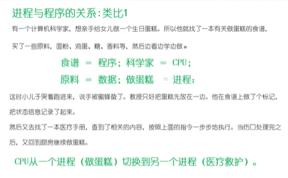

进程的定义、组成和特点
-
进程（process）描述
-
进程状态（state）
-
线程（thread）
-
进程间通信（inter-process communication）
-
进程互斥与同步
-
死锁（deadlock）
-
进程描述
定义：
一个具有一定独立功能的程序在一个数据集合上的一次动态执行过程
组成：
一个进程应该包括：
- 程序的代码；
- 程序处理的数据
- 程序计数器中的值，执行下一条运行的指令
- 一组通用的寄存器的当前值，堆、栈
- 一组系统资源（如打开的文件）
总之，进程包含了正在运行的一个程序的所有状态信息
进程与程序的联系
- 程序时产生进程的基础
- 程序的每次运行构成不同的进程
- 进程时程序功能的体现
- 通过多次执行，一个程序可对应多个进程；通过调用关系，一个进程可包括多个程序。
进程和程序的区别
- 进程是动态的，程序是静态的；程序是有序代码的集合；进程是程序的执行，进程有核心态/用户态
- 进程是暂时的，程序是永久的；进程是一个状态变化的过程，程序可长久保存
- 进程与程序的组成不同：进程的组成包括程序、数据和进程控制块（即进程状态信息）

进程的特点
- 动态性：可动态创建、结束
- 并发性：进程可以被独立调度并占用处理及运行：并发并行
- 独立性：不同进程的工作互不影响
- 制约性：因访问共享数据/资源或进程间同步而产生制约
程序 = 算法+数据结构
描述进程的数据结构：进程控制块
（Process control block，PCB）
操作系统为每一个进程都维护了一个pcb，用来保存与该进程有关的各种状态信息